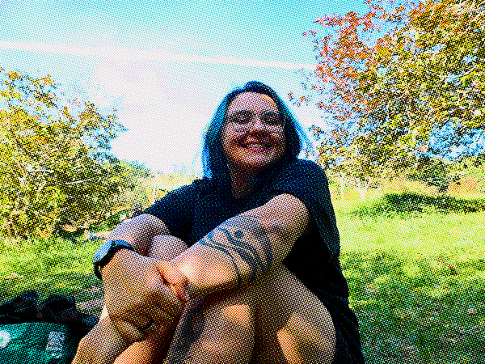

sobre
bia, 24 anos, moro em bh
coisas que eu gosto
🪹 minha casinha, meu parceiro, meus gatinhos, minha vidinha
🌽 todos os byproducts de milho verde: pamonha, curau, suco de milho, milkshake de milho, sorvete de milho, mingau
📚 ler! tenho voltado a ler e tô adorando cultivar esse hobby. li bons livros recentemente, mas li uns ruins também. se quiser ver mais sobre isso olha lá na página de leitura
🎨 colagem, pintura, coisinhas que envolvem fazer arte e inventar moda
🎪 circo, teatro, música e a minha banda favorita que tenta juntar os três: o teatro mágico :))
👾 jogo de tabuleiro, gatos, cachorros, sair de casa, ficar em casa, jogar rimworld, ir na biblioteca, ver meus amigos
coisas que eu não gosto
jiló, religião, fígado de boi